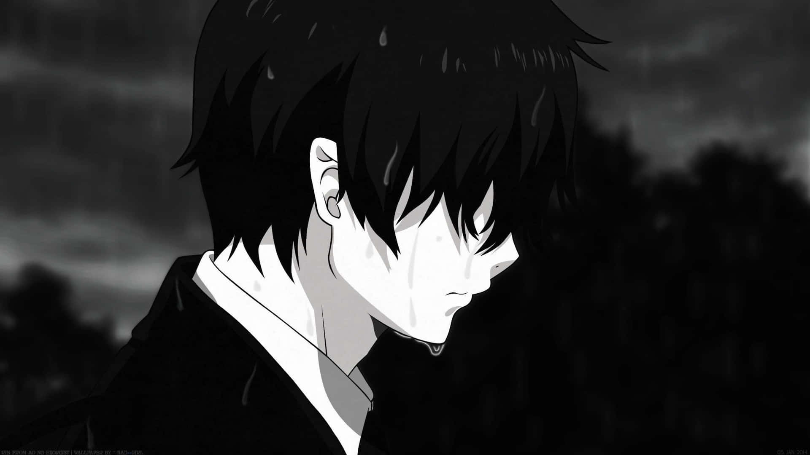
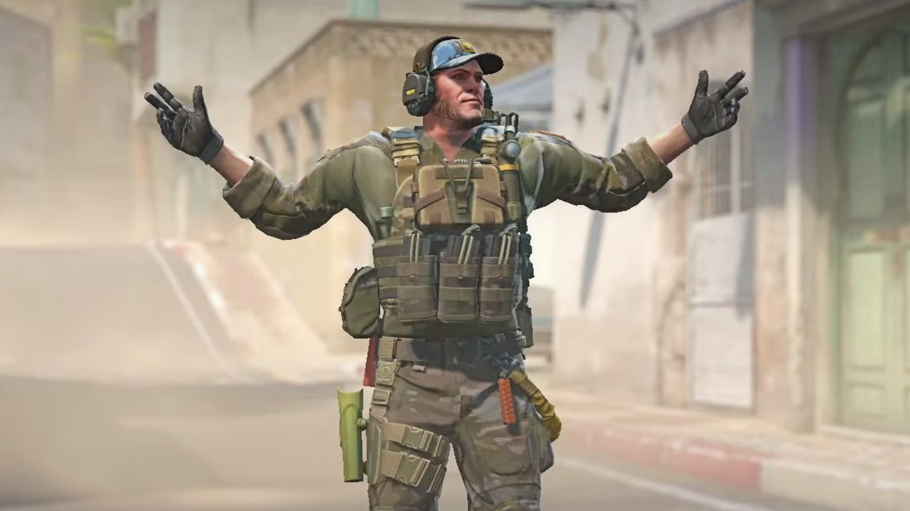
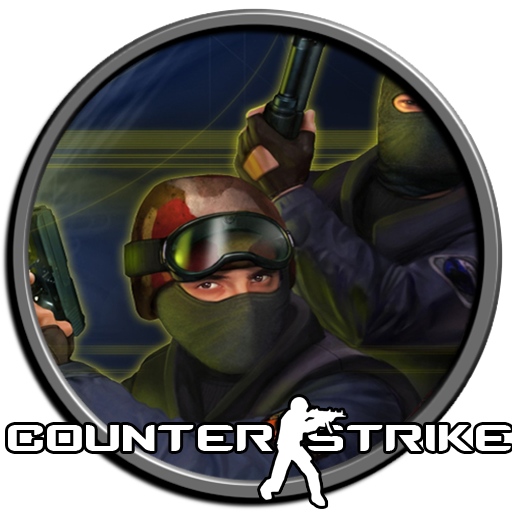

INITIALIZING JOJOS_SYSTEM.EXE...
0%

JOJOS
SYSTEM ACTIVE // CONTENT CREATOR

Counter Strike Archives
Basic Gameplay Channel

CS 1.6 SERVER
CHECKING...
ALL CONTENT
CS2 CLIPS
RETRO REPLAYS
[ Appuyez sur ² ou T pour ouvrir la console système ]
LATEST TACTICAL CLIPS
OLD GAMES REPLAYS
=== ADVANCED TACTICAL COMMAND INTERFACE ===
Tapez 'help' pour voir les fonctions disponibles. Appuyez sur '²' ou 'T' pour fermer.
JOJOS@SYSTEM:~#